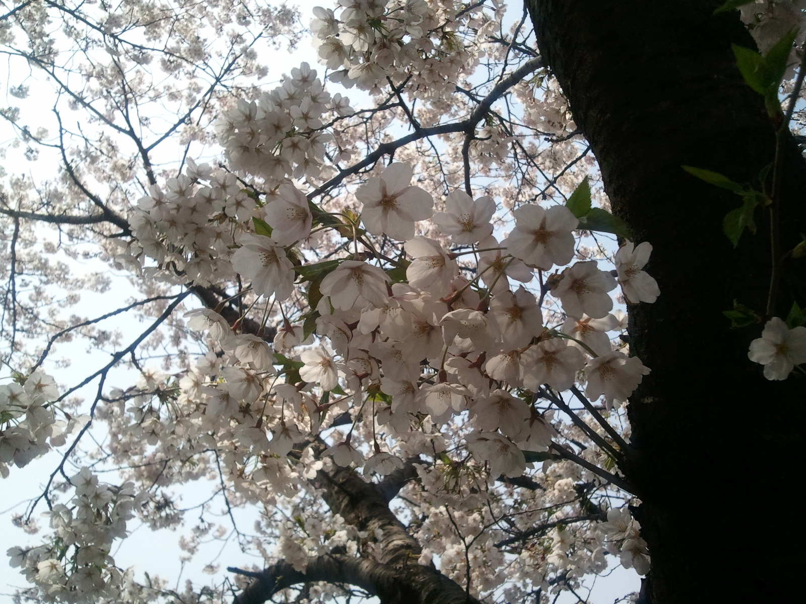
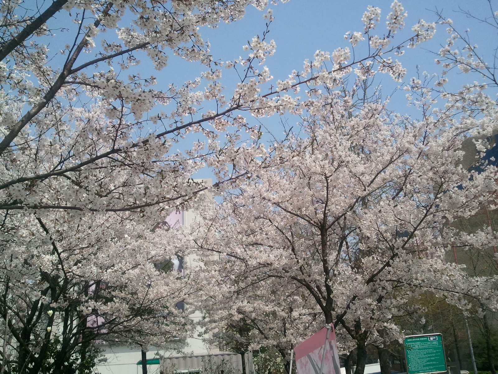
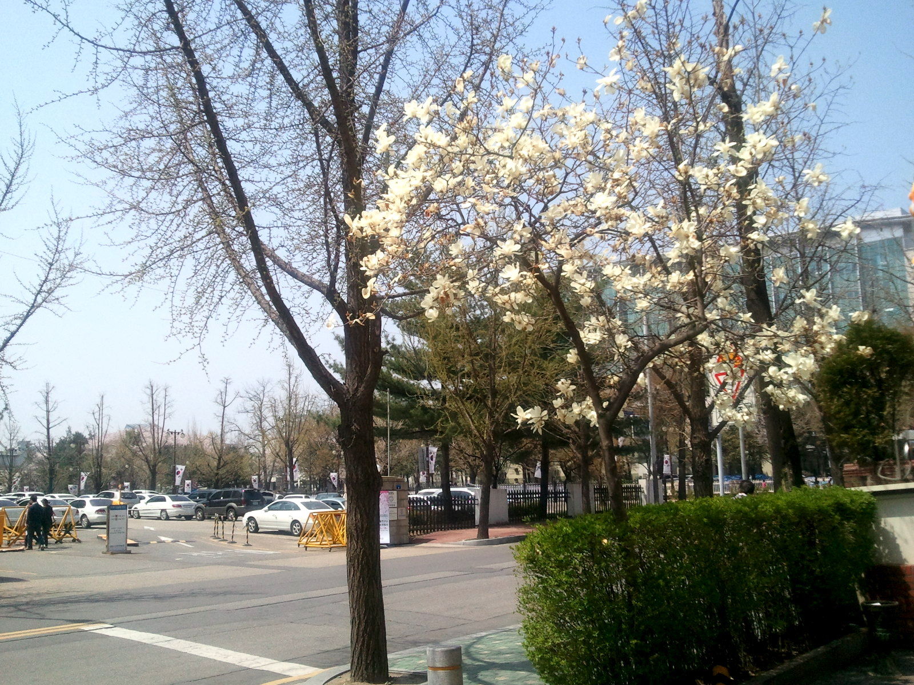
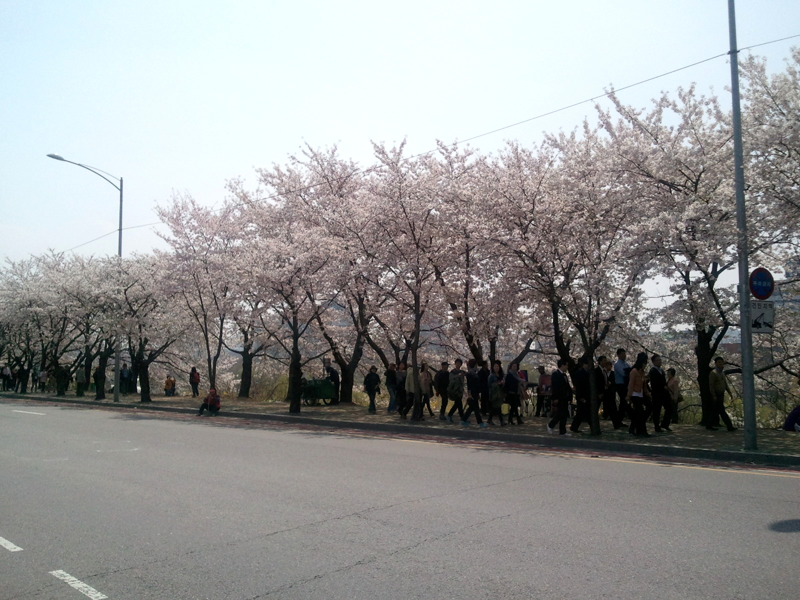
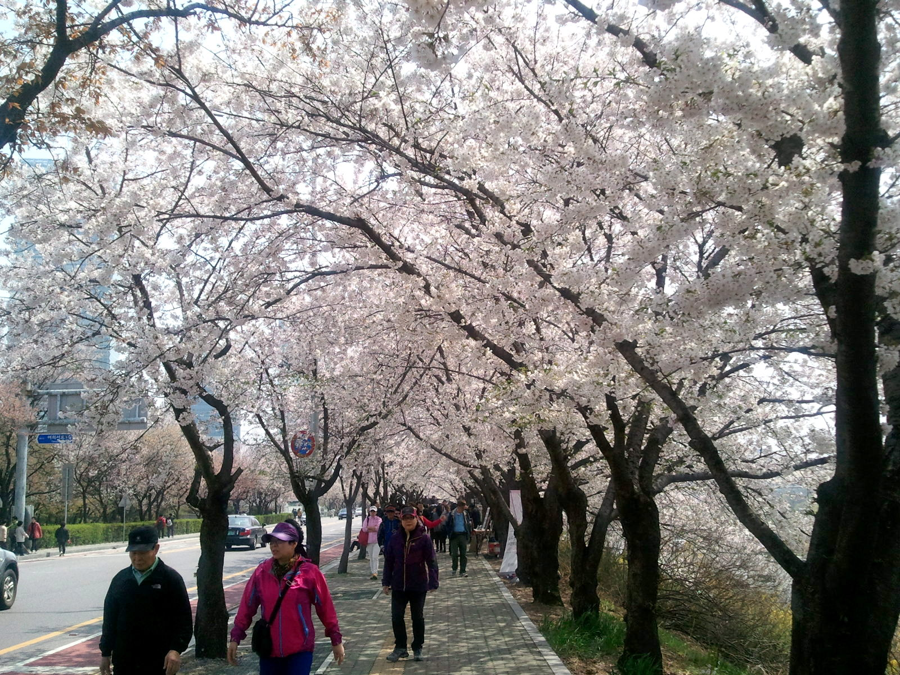
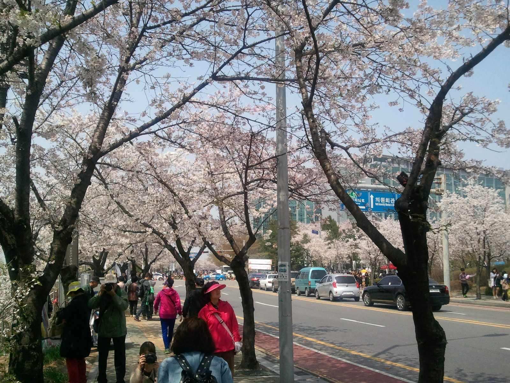
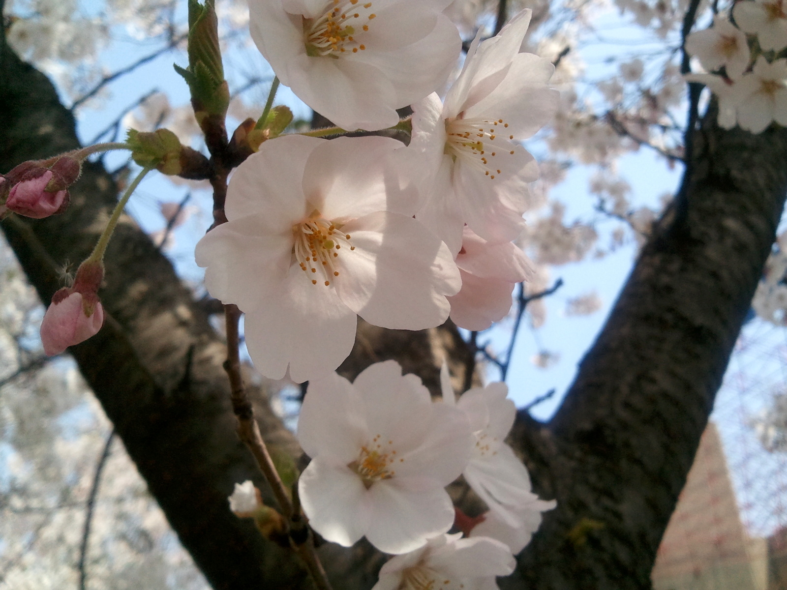

여의도에 드디어 벚꽃이 활짝 폈다. 2013년도 여의도 벚꽃은 참 보기가 힘들었지만 주말부터 조금씩 피더니 며칠 사이에 드디어 보기 좋게 펴서 사람들이 구경 다니기 딱 좋은 때가 됐다. 여의도 벚꽃 축제라고 축제 분위기까지는 모르겠지만 따뜻한 날씨에 사람이 많아지긴 했다.
어제, 오늘 날씨가 좋아지더니 오늘은 출근할 때부터 사람들(특히 여자들) 옷차림이 달라졌다. 어제 봄바람이 불더니 다들 봄을 타는구나.
나도 점심 때는 그냥 밥만 먹고 들어가는 건 아니다 싶어 평상시 밥먹을 땐 놓고 다니던 휴대폰을 가져와 사진을 찍어봤다. 역시 예쁘구나. 국회의사당 앞길, KBS 사잇길 등에서 찍은 사진이다.
      
댓글
댓글을 불러오는 중입니다.